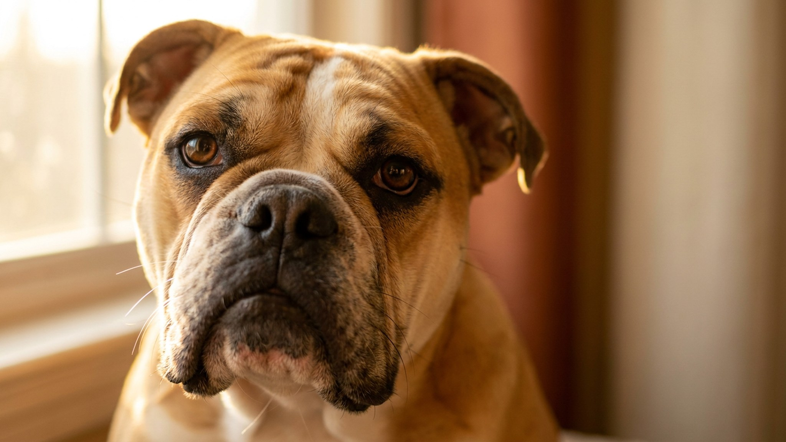

Английский бульдог выглядит как суровый охранник, но по характеру это классический диванный компаньон — привязчивый, добродушный и немного упрямый. Одна деталь меняет всё летом: укороченная морда делает его чувствительным к жаре гораздо сильнее большинства пород. Разбираемся, как устроена жизнь с бульдогом в квартире, чем он отличается от других пород и что особенно важно знать в тёплое время года.
🐾 Питомец ведёт себя странно?
AnimaLife расшифрует поведение кошки и собаки и подскажет, что делать. Попробуйте бесплатно прямо в мессенджере.
Английский бульдог создан для компании. Он выбирает одного-двух главных людей и держится рядом — тихо, без назойливости. С детьми уживается хорошо: порода флегматична и редко реагирует на шум резко. Незнакомцев встречает настороженно, но не агрессивно — скорее просто игнорирует.
Глубокие складки на морде и вокруг хвоста — визитная карточка породы и главная забота хозяина. В них накапливается влага, что создаёт условия для раздражения кожи.
🐾 Здоровье питомца под контролем
AI-ветеринар, дневник здоровья и персональные советы для вашего питомца — установите AnimaLife бесплатно.
🐾 Понравился разбор?
Подпишитесь на канал — каждый день разбираем по одному тревожному симптому у кошек и собак: что в пределах нормы, а когда пора к врачу. Подпишитесь, чтобы не пропустить разбор, который может спасти здоровье вашего питомца.
Английский бульдог относится к брахицефальным породам — у него укороченные дыхательные пути. В жару это важно: собака хуже отдаёт тепло через дыхание, чем длинноносые породы. При +25°C и выше нужна осторожность.
Бульдог склонен к набору веса — порода малоподвижная, а аппетит хороший. Лишние килограммы дают нагрузку на суставы и дыхание. Норма прогулок — 20–30 минут дважды в день в спокойном темпе, без пробежек и прыжков с высоты.
В квартире бульдог ведёт себя образцово: не лает без повода, не разносит вещи, спит помногу. Его устраивает мягкое место на полу или диван рядом с хозяином. Единственное — лестницы. Короткие лапы и массивное тело делают крутые ступени нежелательными; лучше помогать или выбирать маршруты без них.
Материал носит информационный характер и не заменяет очную консультацию ветеринара.